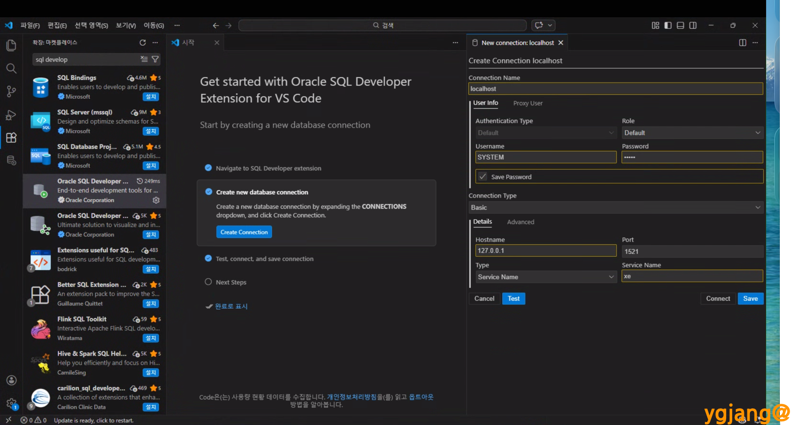
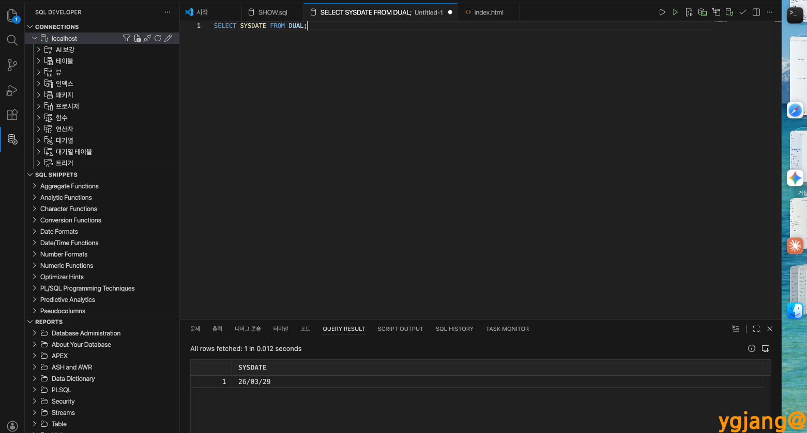

VS Code 에 Oracle SQL Developer Extension for VSCode 추가하기(Windows, macOS 공통)
- Windows 11 Pro (25H2, 26200.7922) 기준
- macOS Tahoe 26.3 이상 기준
1. 확장 프로그램 설치
- 왼쪽 사이드바의 확장(Extensions) 아이콘(사각형 모양)을 클릭하거나
Cmd + Shift + X 클릭
- 검색창에
Oracle SQL Developer 입력
- SQL Developer Extension for VS Code 항목의 [설치] 버튼 클릭
- 주의: 게시자가 Oracle 인지 확인 필요.

2. 데이터베이스 연결 설정
- 설치가 완료되면 나오는 화면에서 [Create Connection] 클릭
- Connection Name: 연결 이름 설정
- User Info:
- Role : Default
- Username : SYSTEM
- Password : Oracle 설치 시 입력한 비밀번호
- Connection Type:
- Connection Type : Basic 또는 각자 설정
- Details > Hostname : localhost 또는 127.0.0.1 또는 서버 주소
- Details > Port : 기본 1521
- Details > Type : Service Name
용어 정리:
- SID (System IDentifier): 데이터베이스 인스턴스를 식별하는 고유 이름. 싱글 서버 구조에서 주로 사용.
- Service Name: 네트워크 접속 시 사용하는 논리적 그룹 이름. RAC, 클라우드 환경의 표준 방식.
- Details > Service Name: xe 또는 DB 서비스 명
- [Test] > [Save] 또는 [Connect]

3. 튜토리얼 및 주요 기능
Discover the SQL Worksheet 창
- Open a SQL worksheet: 빈 워크시트를 열기
- Attach/Detach Connection: 현재 파일을 특정 데이터베이스 서버와 연결(바인딩)
- Run Statement: 현재 커서가 위치한 단 하나의 명령문만 실행
- Run Script: 워크시트의 모든 명령어(SQL 및 PL/SQL)를 순차적으로 일괄 실행
- Run in SQLcl: VS Code 내장 터미널에서 SQLcl 도구를 통해 실행
- Explain Plan (실행 계획 확인): Oracle 엔진이 데이터를 찾아올 경로를 미리 계산한 지도를 표시
- Review your executed statements (SQL History): 이전에 실행했던 SQL 문장 기록 확인
4. 쿼리 테스트
- VS Code 왼쪽 액티비티 바의 Oracle SQL Developer 아이콘 클릭
- CONNECTIONS에 생성된 DB를 우클릭하고 Open SQL Worksheet 선택
- 워크시트 창에 SQL 쿼리 입력:
SELECT SYSDATE FROM DUAL;
- 쿼리에 커서를 두고
Ctrl+Enter(Windows) 또는 Command+Enter(macOS)로 실행

sql 파일에서 실행 시
- sql 파일을 실행시키고 편집기 우측 하단 상태 표시줄의 No Connection Attached 부분을 클릭
- 연결 목록에서 실행하고자 하는 DB를 선택하여 연결
Ctrl+Enter(Windows) 또는 Command+Enter(macOS)로 쿼리 실행